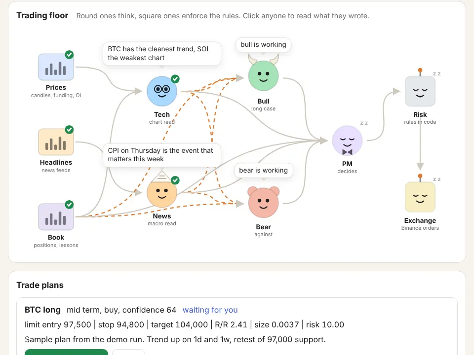

tradedesk
A small crypto desk that runs on your own laptop. A few Claude Code agents read the market each morning and argue about it. A risk engine written in plain Python decides what's allowed and how big. Binance holds the stop.
I build this in my spare time. It's not a product or a service, and it isn't financial advice. Use paper mode. If you trade real money with it, that's your call and your risk.

What happens in a day
- The desk pulls candles, funding and open interest from Binance, plus the last 36 hours of headlines, and writes them into short text files.
- A technical analyst and a news analyst each read their part.
- A bull and a bear read both reports and make their case. One round, 200 words each.
- A portfolio manager weighs them and writes trade ideas with entry, stop and target. Passing is a valid answer.
- The risk engine sizes each idea so a stop-out costs 1% of equity, and throws out anything that breaks a rule.
- What's left waits for you to approve it. Nothing goes out on its own unless you turn that on.
What it won't do
- Open a position without a stop already on the exchange.
- Let the agents pick the size, approve trades, edit the risk code or read your API keys.
- Move a stop against you.
- Make you money. It's a way to run a process and keep a journal of it.
Setup
You need uv and Claude Code. Paper mode needs no keys.
git clone https://github.com/danieljancar/tradedesk.git
cd tradedesk
uv sync
cp desk.example.toml desk.toml
uv run desk serve # dashboard on 127.0.0.1:8420
claude # then type /dailyJust want to look? uv run desk demo replays a made-up run. The README covers everything else.
Disclaimer
tradedesk is a hobby project, shared as is under the MIT license.
- Nothing here or in the software is financial, investment, tax or legal advice. The agents' output is generated text and can be wrong.
- There is no warranty of any kind. The software may have bugs, the exchange may behave differently than expected, and orders may fail, fill badly or not at all.
- I'm not responsible for any loss, missed gain or other damage that comes from using it, to the extent the law allows. You run it on your own machine with your own keys and your own money.
- Trading crypto, and especially with leverage, can lose you more than you expect. Check that it's legal where you live.
- This project isn't affiliated with or endorsed by Binance, Anthropic or any news source it reads.